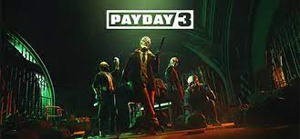

Payday 3
| Developers | URL |
|---|---|
| Overkill Software | Payday 3 Homepage |
| Starbreeze Studios | Payday 2 Homepage |
| Features | Cost | Season pass | Early Access | Bonus Content |
|---|---|---|---|---|
| Standard Version | $40.00 | No | ||
| Silver Version | $70.00 | 6 Months | 3 Days Early | Yes | Gold Version | $90.00 | 1 Year + 6 Months | 3 Days Early | Yes |
Prices: $
Price This Summer $
Reviews
IGN - 7/10
Payday 3 is a solid step forward for my favorite heist simulator franchise, even though that step is a lot smaller than I’d hoped due to a lack of content and the unsurprising but still majorly annoying bugs and performance issues. The awesome combat, greatly improved AI, and especially the stealth options are so massive they alone justify this as a full sequel, and the new and improved heists with clear phases to navigate them are absolutely fantastic. I just wish there was more loot in the proverbial vault at the outset, and that Starbreeze would have used its years of experience in order to ensure this was a more robust and far more stable launch. I’m confident Payday 3 could become the sequel we all deserve with a year or two of updates – for now, it’s a nice start.
Pc Gamer 67/100
In my experience during Payday 3's early access phase before its full release, the matchmaking system would regularly find players. But since its full release, the matchmaking servers have been a mess. Payday 3 is always online and forces you to enter a queue even if you plan on playing solo or with friends, so any instability in the servers means you simply can't play the game. The matchmaking issues should smooth out with time, but any server issues down the line will severely hinder your progress toward unlocking the most powerful gear. Starbreeze has also said it's considering removing the always-online requirement in the future. Payday 3's best moments are when mistakes happen and, instead of giving you a game over, the game shifts into a different mode. That transition emulates the ramping tension of a heist movie and lets everyone play a role no matter what gear they bring to the mission. Payday 3's heavy incentive to prioritize stealth undercuts how satisfying it can be to improvise your solutions on the fly.